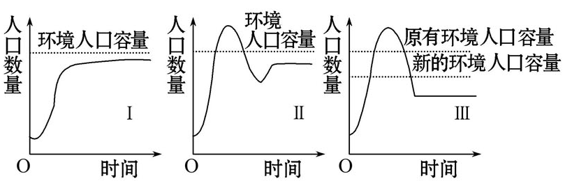
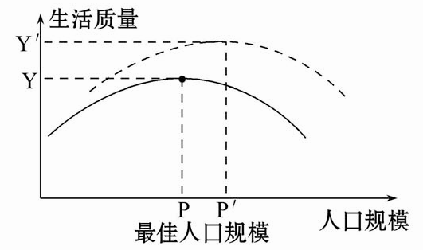
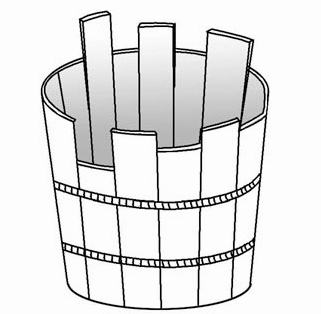
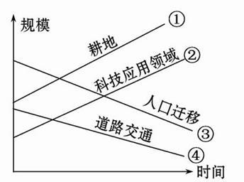

None - Fade - Slide - Convex - Concave - Zoom
选择班级
幻灯片样式
Black (default) -
White -
League -
Sky -
Beige -
Simple
Serif -
Blood -
Night -
Moon -
Solarized
1．环境承载力是指 （ ）
A．环境能持续供养的人口数量
B．衡量人口数量的重要指标
C．制约经济发展的主要指标
D．环境所能容纳的最大人口数
环境人口容量是一个国家或地区在一定条件下所能持续供养的人口数量，据此回答2、3题。
2.环境人口容量的估计主要参考（ ）
A．土地资源能够供养的人口数量
B．矿产资源能够供养的人口数量
C．光照资源能够供养的人口数量
D．气候资源能够供养的人口数量
3．环境人口容量具有（ ）
A．不确定性和绝对稳定性
B．确定性和绝对稳定性
C．不确定性和相对确定性
D．不稳定性和不确定性
下图为反映人口与环境关系的三种模式图，读图回答4、5题。
4.按照人与环境关系的理想程度由好到差排列，三种模式的顺序依次为（ ）
A.Ⅰ、Ⅱ、Ⅲ
B. Ⅱ、Ⅰ、Ⅲ
C. Ⅲ、Ⅱ、Ⅰ
D. Ⅰ、Ⅲ、Ⅱ
5.环境对人类社会的发展有很大的制约作用，保护环境十分重要。下面解决环境问题的四条思路中你最赞成的是（ ）
A.环境效益比经济效益更为重要，必须把保护环境放在优先发展的地位上
B.发展中国家经济相对落后，走先发展后治理的路子势在必行
C.发展经济和保护环境二者并不矛盾，应该走可持续发展之路
D.地球自身有充分自我调节的能力，听其发展，顺其自然
6.（2010·吉林高一检测）据专家的统计，我国西藏人口容量约为每平方千米2人，长江三角洲每平方千米约为500人，对于两地环境人口容量的叙述，正确的是 （ ）
A．影响两地环境人口容量的首要因素是科技
B．长江三角洲人口容量较大的主要原因是经济较发达
C．两地环境的人口容量都已达到极限
D．两地现在的人口密度都远远低于环境人口容量，都存在资源开发不足现象
7.有关人口合理容量的叙述正确的是（ ）
A．是指一个地区的资源环境能够承载的最大人口数量
B．是指一个地区的资源环境能够承载的最小人口数量
C．指保证合理健康的生活水平，且能促进社会、经济和环境可持续发展的人口规模
D．人口合理容量有较强的可确定性
8.有关环境承载力中的人口数量与人口合理容量的说法，正确的是（ ）
A.环境承载力中的人口数量与人口合理容量相当
B.环境承载力中的人口数量较人口合理容量小
C.环境承载力中的人口数量较人口合理容量大
D.人口合理容量是指一个地区目前的人口数
1．环境人口容量由小到大的排序正确的是（ ）
A．原始社会——农业时期——现代社会——工业时期
B．农业时期——原始社会——工业时期——现代社会
C．工业时期——原始社会——农业时期——现代社会
D．原始社会——农业时期——工业时期——现代社会
（2010·滁州高一检测）读某地区不同生产力水平下生活质量与人口规模之间的关系图，回答2、3题。
2．关于图中人口规模的叙述，正确的是（ ）
①P为较低生产力水平条件下的人口合理容量
②P′为环境承载力
③P′为较高生产力水平条件下的人口合理容量
④P为环境承载力
A．①②
B．③④
C．①③
D．②④
3．图中反映了在同一生产力水平条件下（ ）
①人口规模与生活质量呈正相关
②人口规模与生活质量呈负相关
③当人口规模低于最佳人口规模时，人口的增长和生活质量的提高呈正相关
④当人口规模高于最佳人口规模时，人口的增长将导致生活质量的下降
A.①②
B.③④
C.①③
D.②④
（2010·枣庄模拟）读木桶效应（组成木桶的木板如果长短不齐，那么这只木桶的盛水量不取决于最长的那一块木板，而是取决于最短的）图，回答4、5题。
4.以某地的四类要素测得的各自所能供养的人口数量分别为：8 000、10 000、6 000、4 500，则该地的环境人口容量为
A.8 000
B.10 000
C.6 000
D.4 500
5.对于影响我国不同省区人口合理容量的因素相当于木桶短板的是（ ）
A.四川——水力资源
B.山东——气候资源
C.黑龙江——矿产资源
D.内蒙古——水资源
6．下图中显示能提高青藏地区人口合理容量的有效途径是
（ ）
A．①
B．②
C．③
D．④
